Checking the assumption of linear regression
Initialize session
data("ChickWeight")
summary(ChickWeight)## weight Time Chick
## Min. : 35.0 Min. : 0.00 13 : 12
## 1st Qu.: 63.0 1st Qu.: 4.00 9 : 12
## Median :103.0 Median :10.00 20 : 12
## Mean :121.8 Mean :10.72 10 : 12
## 3rd Qu.:163.8 3rd Qu.:16.00 17 : 12
## Max. :373.0 Max. :21.00 19 : 12
## (Other):506
## Diet
## 1:220
## 2:120
## 3:120
## 4:118
##
##
## attach(ChickWeight)Linear Model
lrmod <- lm(weight~Time+Diet)
summary(lrmod)##
## Call:
## lm(formula = weight ~ Time + Diet)
##
## Residuals:
## Min 1Q Median 3Q Max
## -136.851 -17.151 -2.595 15.033 141.816
##
## Coefficients:
## Estimate Std. Error t value
## (Intercept) 10.9244 3.3607 3.251
## Time 8.7505 0.2218 39.451
## Diet2 16.1661 4.0858 3.957
## Diet3 36.4994 4.0858 8.933
## Diet4 30.2335 4.1075 7.361
## Pr(>|t|)
## (Intercept) 0.00122 **
## Time < 2e-16 ***
## Diet2 8.56e-05 ***
## Diet3 < 2e-16 ***
## Diet4 6.39e-13 ***
## ---
## Signif. codes:
## 0 '***' 0.001 '**' 0.01 '*' 0.05 '.' 0.1 ' ' 1
##
## Residual standard error: 35.99 on 573 degrees of freedom
## Multiple R-squared: 0.7453, Adjusted R-squared: 0.7435
## F-statistic: 419.2 on 4 and 573 DF, p-value: < 2.2e-16Non-linearity and Heteroscedacity
ChickWeight$res <- resid(lrmod)
ChickWeight$fit <- fitted(lrmod)
library(ggplot2)
theme_set(theme_bw())
ggplot(data=ChickWeight, aes(x=fit, y=res)) + geom_point(shape=21, size=3,
col="black", fill="gray",
alpha=0.7) +
labs(y="Residuals", x="Fitted Values") + geom_smooth(se = FALSE, col="red") +
geom_hline(yintercept = 0, linetype="dotted")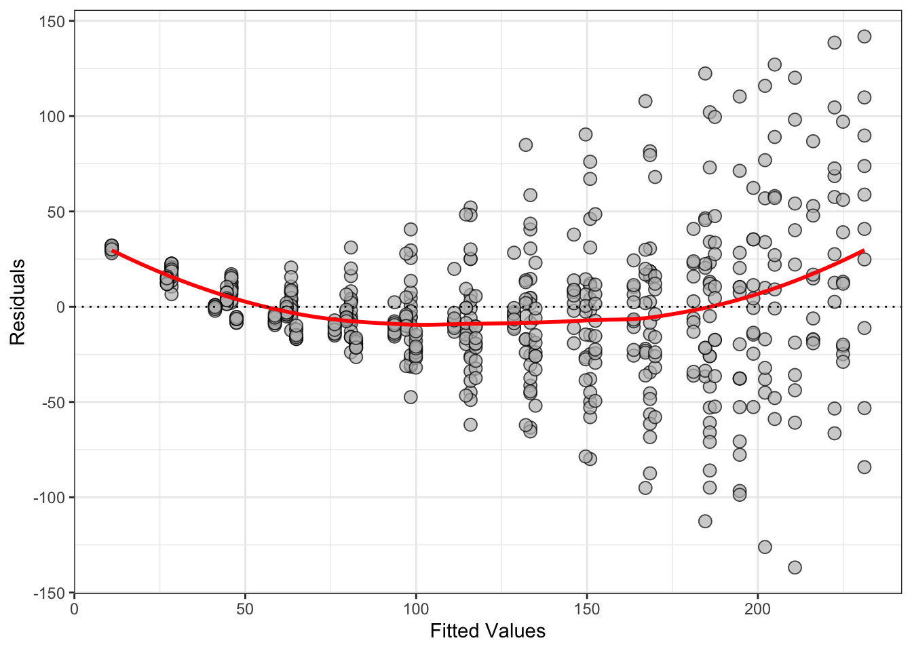
By this plot, we can see 2 things: the relation is likely not linear (curved line of smooth fit) and the assumption of heteroscedacity is not respected, i.e., the variance of the error terms is not constant. This happens when the error terms increase with the increase of the response. For addressing both of this problems, we can attempt a non-linear transformation of x and y. For the heteroscedacity problem, we may choose a “concave” function, such as square root or log.
lrmodlog <- lm(log(weight)~I(Time^2)+Diet)
ChickWeight$reslog <- resid(lrmodlog)
ChickWeight$fitlog <- fitted(lrmodlog)
ggplot(data=ChickWeight, aes(x=fitlog, y=reslog)) + geom_point(shape=21, size=3,
col="black", fill="gray",
alpha=0.7) +
labs(y="Residuals", x="Fitted Values") + geom_smooth(se = FALSE, col="red") +
geom_hline(yintercept = 0, linetype="dotted")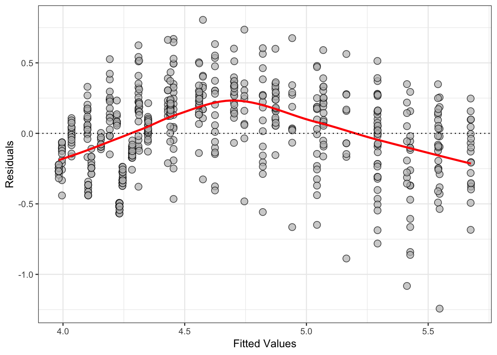
The “funnel” shape typical of heteroscedacity disappeared, though the pattern is not linear yet. Maybe the transformation of x is not appropriate.
lrmodlog2 <- lm(log(weight)~I(Time^2)+I(Time^3)+Diet)
ChickWeight$reslog2 <- resid(lrmodlog2)
ChickWeight$fitlog2 <- fitted(lrmodlog2)
ggplot(data=ChickWeight, aes(x=fitlog2, y=reslog2)) + geom_point(shape=21, size=3,
col="black", fill="gray",
alpha=0.7) +
labs(y="Residuals", x="Fitted Values") + geom_smooth(se = FALSE, col="red") +
geom_hline(yintercept = 0, linetype="dotted")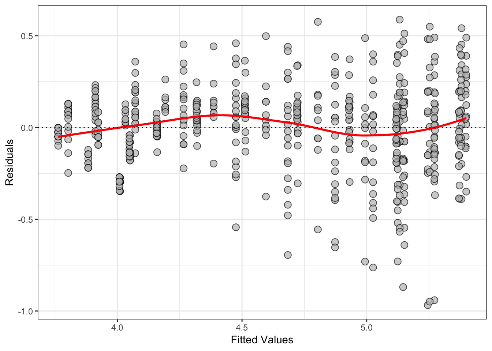
Better.
lrmodlog3 <- lm(log(weight)~poly(Time,4)+Diet)
ChickWeight$reslog3 <- resid(lrmodlog3)
ChickWeight$fitlog3 <- fitted(lrmodlog3)
ggplot(data=ChickWeight, aes(x=fitlog3, y=reslog3)) + geom_point(shape=21, size=3,
col="black", fill="gray",
alpha=0.7) +
labs(y="Residuals", x="Fitted Values") + geom_smooth(se = FALSE, col="red") +
geom_hline(yintercept = 0, linetype="dotted")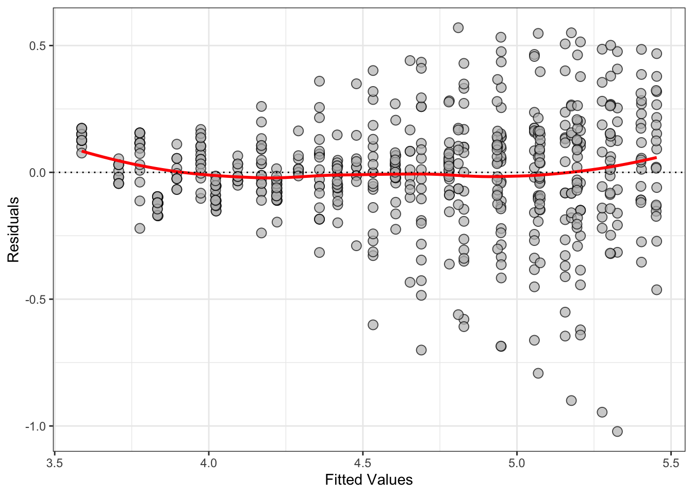
Transforming time at the second, third and fourth power significantly improve the fit of our model. Let’s check it out.
summary(lrmodlog3)##
## Call:
## lm(formula = log(weight) ~ poly(Time, 4) + Diet)
##
## Residuals:
## Min 1Q Median 3Q Max
## -1.0218 -0.1042 0.0104 0.1249 0.5703
##
## Coefficients:
## Estimate Std. Error t value
## (Intercept) 4.50907 0.01480 304.747
## poly(Time, 4)1 12.58899 0.21950 57.353
## poly(Time, 4)2 -1.52536 0.21942 -6.952
## poly(Time, 4)3 -0.17045 0.21941 -0.777
## poly(Time, 4)4 0.16276 0.21941 0.742
## Diet2 0.11999 0.02491 4.818
## Diet3 0.24751 0.02491 9.937
## Diet4 0.24583 0.02504 9.818
## Pr(>|t|)
## (Intercept) < 2e-16 ***
## poly(Time, 4)1 < 2e-16 ***
## poly(Time, 4)2 9.90e-12 ***
## poly(Time, 4)3 0.438
## poly(Time, 4)4 0.459
## Diet2 1.87e-06 ***
## Diet3 < 2e-16 ***
## Diet4 < 2e-16 ***
## ---
## Signif. codes:
## 0 '***' 0.001 '**' 0.01 '*' 0.05 '.' 0.1 ' ' 1
##
## Residual standard error: 0.2194 on 570 degrees of freedom
## Multiple R-squared: 0.8606, Adjusted R-squared: 0.8588
## F-statistic: 502.5 on 7 and 570 DF, p-value: < 2.2e-16Correlation error terms
ggplot(data=ChickWeight, aes(x=Time, y=res,
group=Chick, fill=Chick,
col=Chick)) +
geom_point(shape=21, size=3,
col="black", alpha=0.7,
position = position_dodge(10)) +
labs(y="Residuals", x="Time") + geom_path(position = position_dodge(10)) +
theme(legend.position = "none")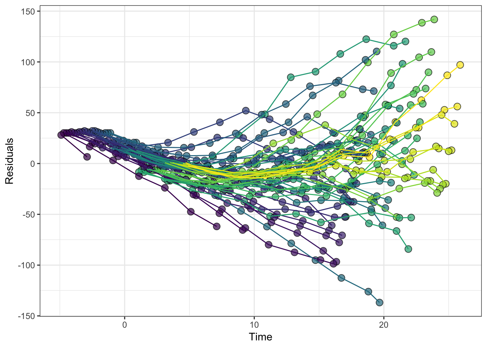
This plot is also showing a problem, that is that there is a time pattern in the error terms. This is not very problematic for the fit, but rather for the estimate of the Ci and the p-values, as it increases the probability of a false positive. Let’s check the same plot with the transformed variables:
ggplot(data=ChickWeight, aes(x=Time, y=reslog3,
group=Chick, fill=Chick,
col=Chick)) +
geom_point(shape=21, size=3,
col="black", alpha=0.7,
position = position_dodge(10)) +
labs(y="Residuals", x="Time") + geom_path(position = position_dodge(10)) +
theme(legend.position = "none")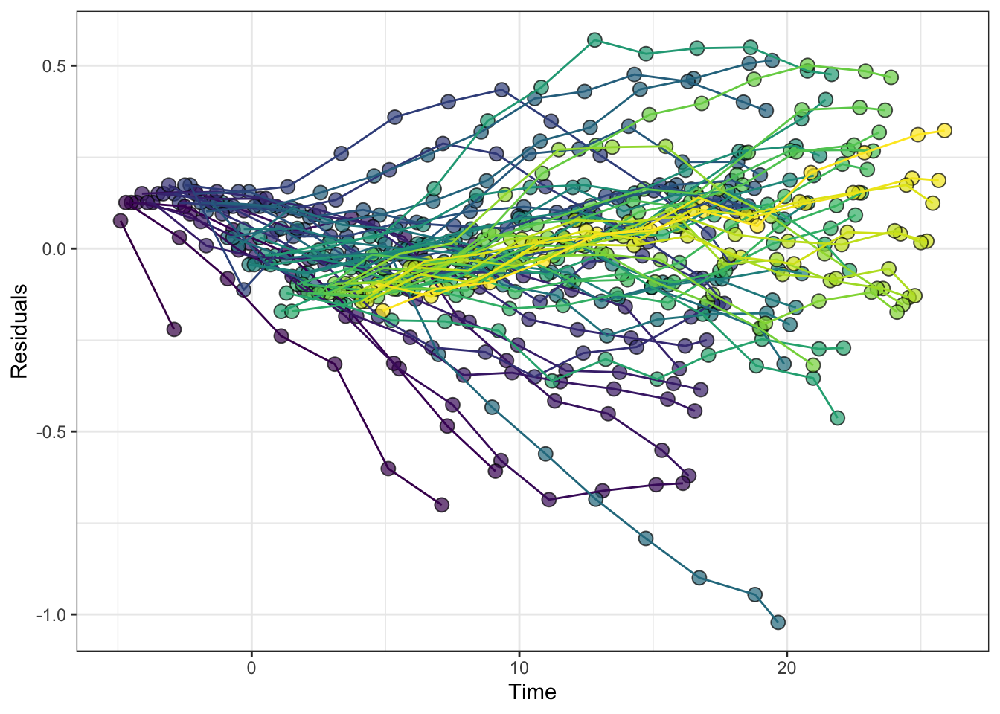
Here we see that the time pattern is less visible for observations that tended to increase over time, while there is still a certain trend for the decreasing values.
Outliers
library(MASS)
ChickWeight$studres <- studres(lrmod)
ChickWeight$studres3 <- studres(lrmodlog3)
library(ggrepel)
ggplot(data=ChickWeight, aes(x=fit, y=studres)) + geom_point(shape=21, size=3,
col="black", fill="gray",
alpha=0.7) +
labs(y="Studentized Residuals", x="Fitted Values") +
geom_hline(yintercept = 3, linetype="dotted") +
geom_label_repel(aes(label = ifelse(studres>3, paste0(Chick, "-", Time), "")),
box.padding = 0.35,
point.padding = 0.5,
segment.color = 'grey50')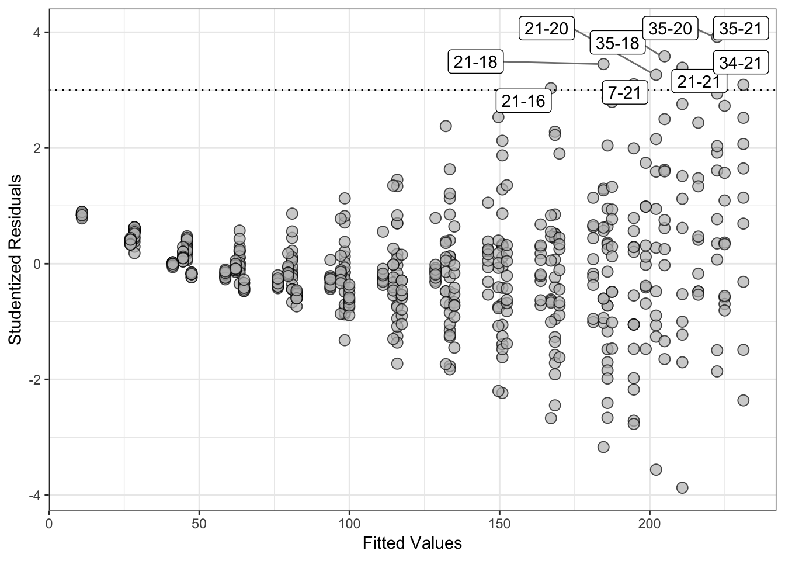
ggplot(data=ChickWeight, aes(x=fitlog3, y=studres3)) + geom_point(shape=21, size=3,
col="black", fill="gray",
alpha=0.7) +
labs(y="Studentized Residuals", x="Fitted Values") +
geom_hline(yintercept = 3, linetype="dotted") +
geom_label_repel(aes(label = ifelse(studres3>3, paste0(Chick, "-", Time), "")),
box.padding = 0.35,
point.padding = 0.5,
segment.color = 'grey50')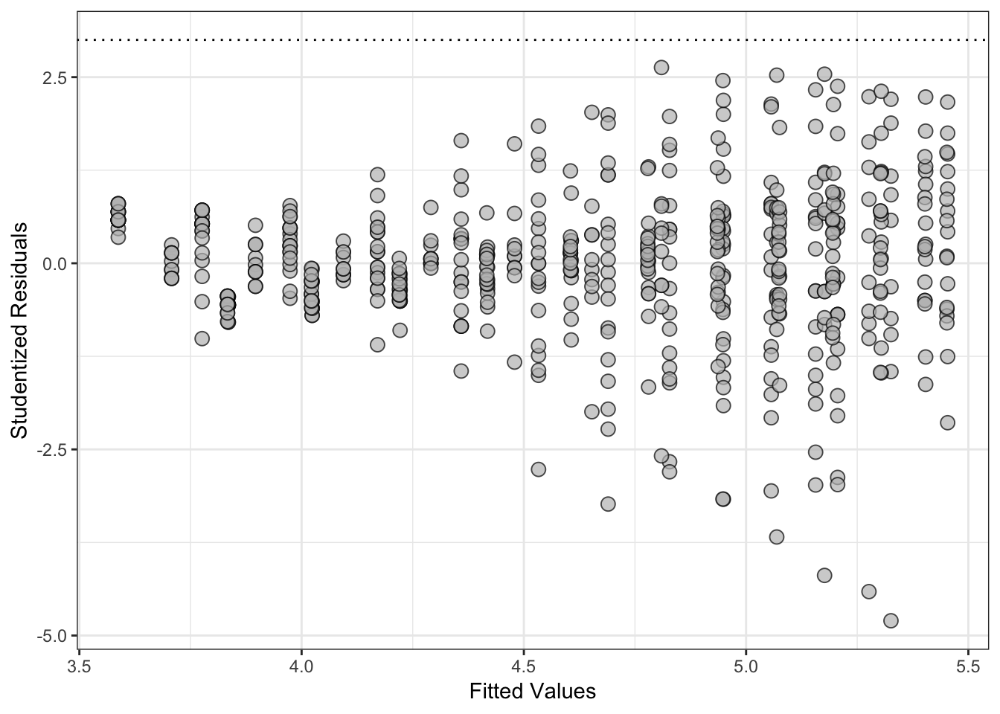
We can see here that by transforming we remove the outlier problem.
High leverage points
ChickWeight$lev <- hat(model.matrix(lrmodlog3))
plot(ChickWeight$lev)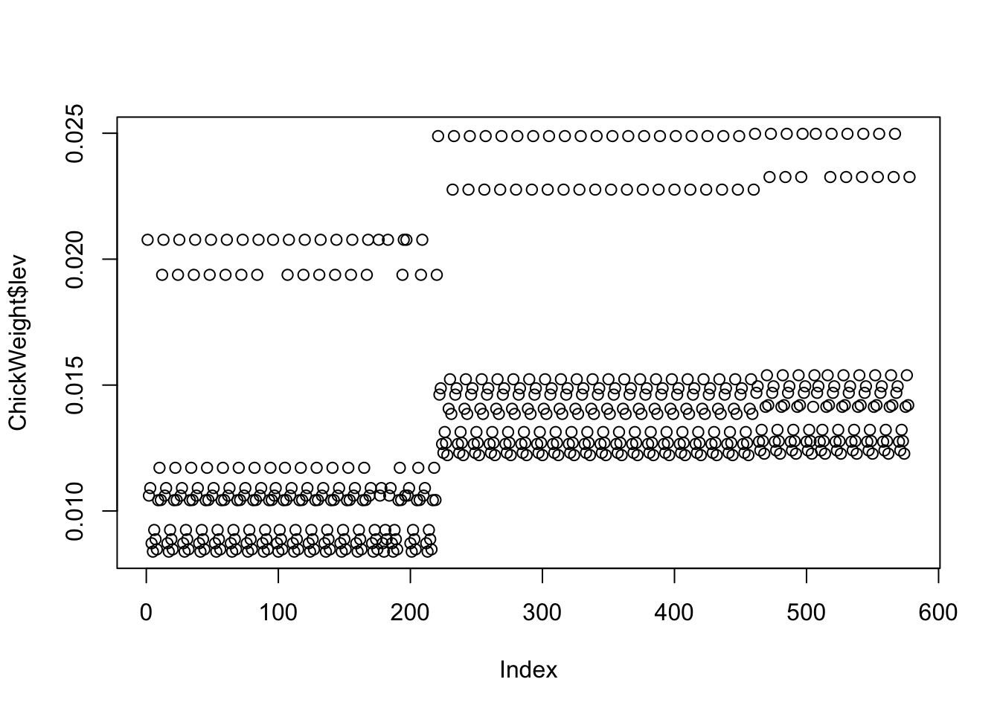
We don’t see particularly influencial observations in the predictor variables.
ChickWeight[ChickWeight$lev>0.2,]## Grouped Data: weight ~ Time | Chick
## [1] weight Time Chick Diet
## [5] res fit reslog fitlog
## [9] reslog2 fitlog2 reslog3 fitlog3
## [13] studres studres3 lev
## <0 rows> (or 0-length row.names)Collinearity
library(car)
vif(lrmodlog3)## GVIF Df GVIF^(1/(2*Df))
## poly(Time, 4) 1.000972 4 1.000121
## Diet 1.000972 3 1.000162Here I am a little puzzled, as the original model did not have any collinearity. Of course, the 3 transformation of time must be correlated between each other, so this could explain the absurdely high vifs.
Correlation
I would normally check the correlation coefficients with cor(), but we have a categorical and numerical predictor here. First, a categorical variable does not increase/decrease, so it does not make muche sense to ask if there is a correlation. Also, the problem of collinearity arises when twob variables are strongly and positively correlated and are harly distinguashable between each other. I think this is not the case. However, we can have a sense of the association by regressing the two and looking at the correlation between the residuals and the observed values:
lrmod2 <- lm(Time~Diet, data=ChickWeight)
rsq <- summary(lrmod2)$r.squared
sqrt(rsq)## [1] 0.02882599The squared root of R^2 is the measure of correlation between residuals and observed values, and we see this is minimal!
As a conclusion, this model: log(weight) ~ I(Time^2) + I(Time^3) + I(Time^4) + Diet has been demonstrated to be a “good” (relatively best) fit for the ChickWeigh data.
Linear Mixed Model
library(lme4)
lmrmod <- lmer(weight~Time+Diet+(1|Chick))
summary(lmrmod)## Linear mixed model fit by REML. t-tests use
## Satterthwaite's method [lmerModLmerTest]
## Formula: weight ~ Time + Diet + (1 | Chick)
##
## REML criterion at convergence: 5584
##
## Scaled residuals:
## Min 1Q Median 3Q Max
## -3.0591 -0.5779 -0.1182 0.4962 3.4515
##
## Random effects:
## Groups Name Variance Std.Dev.
## Chick (Intercept) 525.4 22.92
## Residual 799.4 28.27
## Number of obs: 578, groups: Chick, 50
##
## Fixed effects:
## Estimate Std. Error df
## (Intercept) 11.2438 5.7887 57.9038
## Time 8.7172 0.1755 531.4437
## Diet2 16.2100 9.4643 46.2232
## Diet3 36.5433 9.4643 46.2232
## Diet4 30.0129 9.4708 46.3486
## t value Pr(>|t|)
## (Intercept) 1.942 0.056960 .
## Time 49.684 < 2e-16 ***
## Diet2 1.713 0.093461 .
## Diet3 3.861 0.000349 ***
## Diet4 3.169 0.002709 **
## ---
## Signif. codes:
## 0 '***' 0.001 '**' 0.01 '*' 0.05 '.' 0.1 ' ' 1
##
## Correlation of Fixed Effects:
## (Intr) Time Diet2 Diet3
## Time -0.307
## Diet2 -0.550 -0.015
## Diet3 -0.550 -0.015 0.339
## Diet4 -0.550 -0.011 0.339 0.339Non-linearity and Heteroscedacity
ChickWeight$res <- resid(lmrmod)
ChickWeight$fit <- fitted(lmrmod)
ggplot(data=ChickWeight, aes(x=fit, y=res)) + geom_point(shape=21, size=3, col="black", fill="gray", alpha=0.7) +
labs(y="Residuals", x="Fitted Values") + geom_smooth(se = FALSE, col="red") +
geom_hline(yintercept = 0, linetype="dotted")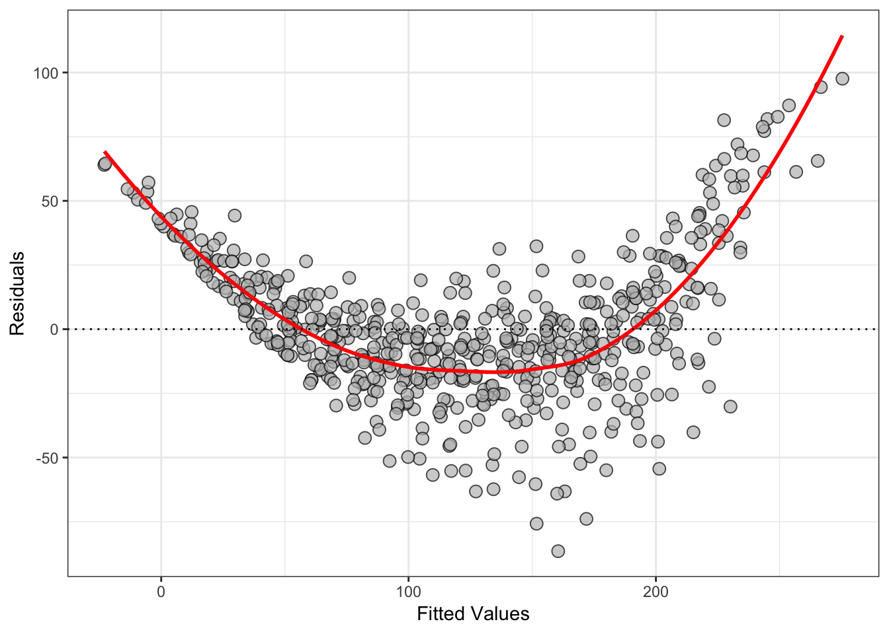
Wohooo!! Heteroscedacity respected, but how curved!!
lrmodtr <- lmer(weight~Time+I(Time^2)+Diet+(1|Chick))
ChickWeight$restr <- resid(lrmodtr)
ChickWeight$fittr <- fitted(lrmodtr)
ggplot(data=ChickWeight, aes(x=fittr, y=restr)) + geom_point(shape=21, size=3, col="black", fill="gray", alpha=0.7) +
labs(y="Residuals", x="Fitted Values") + geom_smooth(se = FALSE, col="red") +
geom_hline(yintercept = 0, linetype="dotted")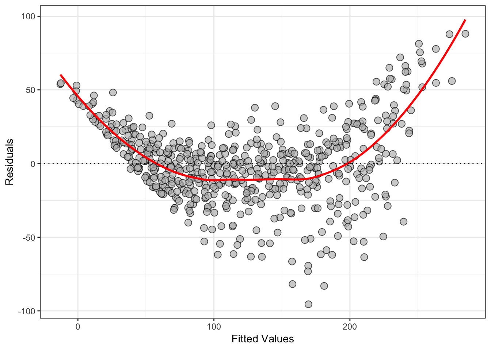
lrmodtr2 <- lmer(weight~Time+poly(Time,4)+Diet+(1|Chick))
ChickWeight$restr2 <- resid(lrmodtr2)
ChickWeight$fittr2 <- fitted(lrmodtr2)
ggplot(data=ChickWeight, aes(x=fittr2, y=restr2)) + geom_point(shape=21, size=3, col="black", fill="gray", alpha=0.7) +
labs(y="Residuals", x="Fitted Values") + geom_smooth(se = FALSE, col="red") +
geom_hline(yintercept = 0, linetype="dotted")
If I attempt the mixed model… this is not linear at all!!